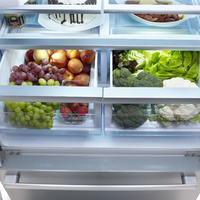

Żadna współczesna gospodyni nie wyobraża sobie swojej kuchni bez lodówki, która niezwykle ułatwia bezpieczne przechowywanie jedzenia. W lodówce możemy przechowywać niemal każdy rodzaj żywności: zarówno mięso, wędliny, sery, produkty mleczne, ciasta, jak i warzywa oraz owoce. Żeby jednak lodówka dobrze spełniała swoje zadanie, warto wiedzieć, jak ją właściwie użytkować i jakich produktów nie należy w niej trzymać.
Produkty żywnościowe należy układać we właściwych miejscach, zgodnie z wymaganą dla nich temperaturą przechowywania:
Jak przechowywać jedzenie w lodówce?
Odpowiednie przechowywanie jedzenia w lodówce ma wpływ na smak i zapach potraw, a ponadto sprawia, że produkty żywnościowe dłużej zachowują świeżość. Poznaj tajniki właściwego przechowywania żywności.Żadna współczesna gospodyni nie wyobraża sobie swojej kuchni bez lodówki, która niezwykle ułatwia bezpieczne przechowywanie jedzenia. W lodówce możemy przechowywać niemal każdy rodzaj żywności: zarówno mięso, wędliny, sery, produkty mleczne, ciasta, jak i warzywa oraz owoce. Żeby jednak lodówka dobrze spełniała swoje zadanie, warto wiedzieć, jak ją właściwie użytkować i jakich produktów nie należy w niej trzymać.
Produkty żywnościowe należy układać we właściwych miejscach, zgodnie z wymaganą dla nich temperaturą przechowywania:
- warzywa i owoce – oczyszczone, umyte i wysuszone warzywa należy przechowywać w specjalnie dla nich przeznaczonych szufladach na półce najbardziej oddalonej od zamrażalnika, gdzie jest najwyższa temperatura.
- w szufladach należy również przechowywać owoce – cytrusowe myjemy przed włożeniem do lodówki, zaś owoce nietrwałe, typu maliny, truskawki, trzymamy w miseczce i myjemy dopiero po wyjęciu z lodówki. Szuflady możemy wyściełać kilkoma warstwami ręcznika papierowego, który pochłonie nadmiar wilgoci
- świeże mięso i ryby – należy przechowywać w najbardziej chłodnej części lodówki, czyli na półce ponad szufladami na warzywa. Przed włożeniem do lodówki mięso i ryby powinny być umyte, posolone (możne je też skropić sokiem z cytryny, dzięki temu opóźnimy rozwój drobnoustrojów)
- produkty mleczne (kefiry, jogurty, maślanki), dżemy, powidła i ciasta przechowujemy na górnej półce
- wędliny, przetworzone mięso, masło, żółte sery, twarogi, jajka - na środkowych półkach. Wędliny i produkty o silnym zapachu powinny być opakowane w folię spożywczą lub papier
- słoiki z otwartymi przetworami, sosy, chrzan, ketchup, musztarda itp. trzymamy na bocznych półkach na drzwiach lodówki.
- nie powinno się przechowywać w lodówce żywności o silnym zapachu, chyba że jest to niezbędne – wówczas należy je dokładnie zapakować i zabezpieczyć przed rozprzestrzenianiem się silnej woni;
- nie należy przeładowywać lodówki – zbyt duża ilość produktów żywnościowych utrudnia prawidłową cyrkulację powietrza wewnątrz lodówki;
- z oczywistych względów nie wolno trzymać w lodówce produktów zepsutych, nieświeżych czy spleśniałych;
- nie należy wkładać do lodówki potraw ciepłych lub gorących – (bo wówczas podnosi się w jej wnętrzu temperatura, a na ściankach lodówki osiada szron);
- nie przechowujemy w lodówce produktów suchych i sypkich, typu kasza, cukier, ryż, płatki, gdyż mogą nabrać wilgoci;
- nie należy trzymać w lodówce miodu, gdyż stwardnieje;
- nie powinno się przechowywać w lodówce pieczywa, bo szybciej sczerstwieje (jeśli kupiliśmy zbyt dużo chleba czy bułek, lepiej je zamrozić);
- kawy i herbaty nie przechowujemy w lodówce, bo bardzo tracą na smaku i aromacie;
- nie ma potrzeby przechowywania w lodówce nieotwartych produktów w puszkach, słoikach i butelkach, m.in. konserw mięsnych czy rybnych, gotowych sosów i potraw, napojów, olejów i oliwy (olej i oliwę przechowujemy w suchym i ciemnym miejscu, również po otwarciu nie trzeba ich trzymać w lodówce).
Źródło:
https://beszamel.se.pl/kupowanie-i-przechowywanie/jak-przechowywac-zywnosc-w-lodowce-czego-nie-trzymac-w-lodowce,1595